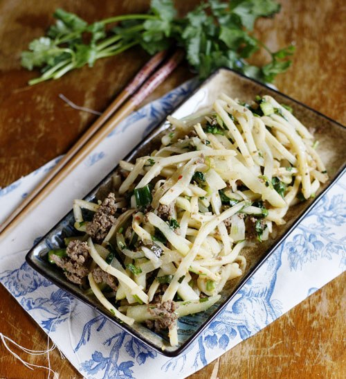

Nguyên liệu:
- 250g măng tươi
- 200g thịt bò xay
- 1-2 củ su su
- Hành lá, muối, hạt nêm, vài nhánh rau mùi, hạt tiêu, tỏi.
Cách làm:
Bước 1:
- Măng tươi rửa sạch, cho măng vào nồi, luộc khoảng 5-7 phút, sau đó xả lại nước lạnh cho thật sạch để măng bớt chua, cho măng lên rổ cho ráo nước.
Bước 2:
- Thịt bò xay đổ ra bát, cho vào bát thịt bò nửa thìa nhỏ muối, một ít hạt tiêu, một thìa nhỏ dầu ăn, trộn đều ướp khoảng 15 phút.
Bước 3:
- Su su gọt vỏ rửa sạch, cắt thành từng sợi dài.
Bước 4:
- Đun nóng một ít dầu ăn ở chảo, phi tỏi thơm, cho thịt bò vào xào chín, múc thịt bò ra đĩa để riêng.
Bước 5:
- Dùng lại chảo đó, cho măng vào xào chín, tiếp theo cho su su vào xào cùng, nêm vào một ít muối, hạt nêm cho vừa miệng. Xào đến khi su su và măng chín thì cho thịt bát thịt bò vào xào cùng, đảo đều tay.
Bước 6:
- Cuối cùng nêm lại gia vị cho vừa ăn, tắt bếp thêm rau mùi thái nhỏ vào, múc ra đĩa dùng làm món xào ăn với cơm.